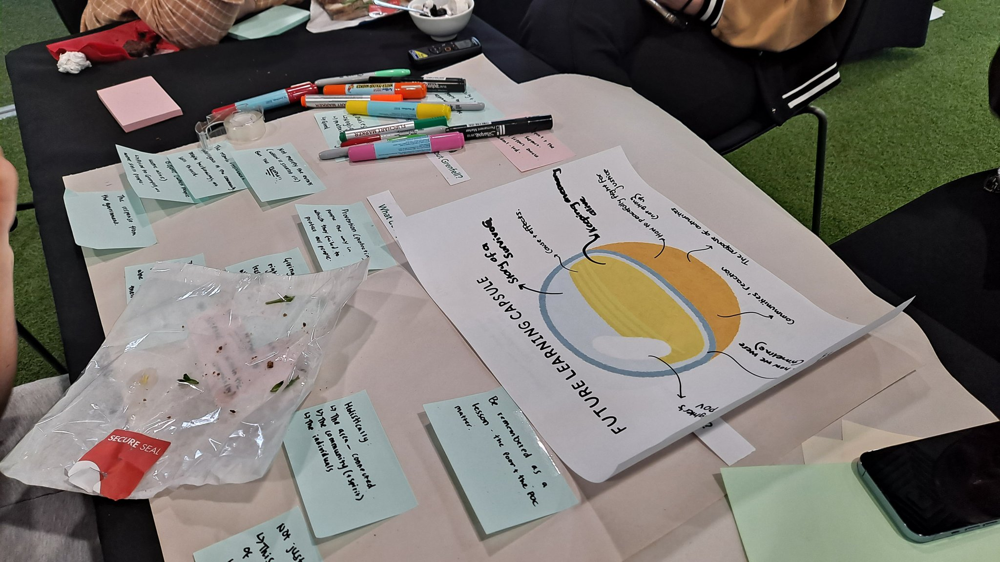
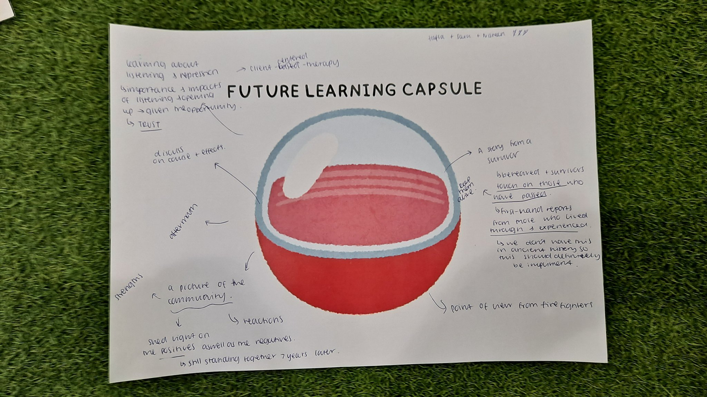
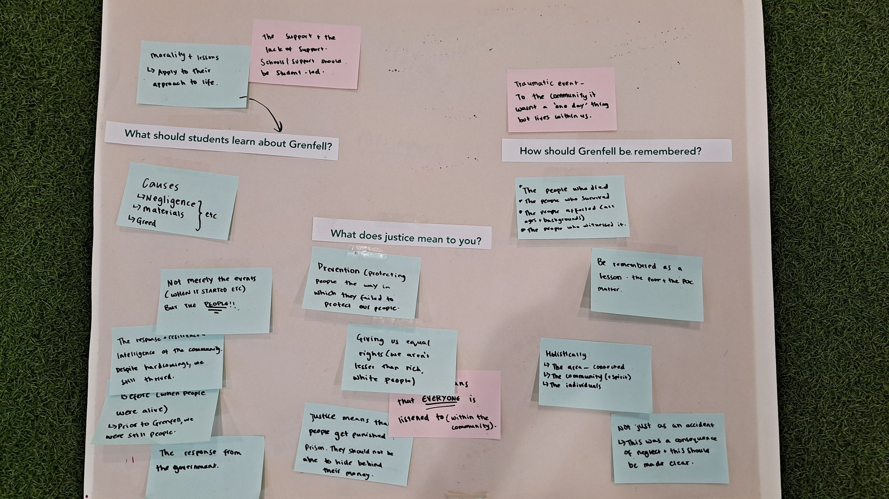

Summary
The project combines disaster justice education and community-engaged participatory research methods to create a space for collaborative learning and identify educational needs and priorities, in collaboration with the Grenfell Tower fire community in London.
The Grenfell Tower fire disaster occurred on 14 June 2017, in North Kensington, London, marking one of the most tragic events in recent British history. A fire broke out in the 24-storey residential building and rapidly spread due to the flammable exterior cladding. The blaze raged for over 60 hours, resulting in the deaths of 72 people and injuring many others. Investigations revealed significant failures in social housing policy, fire safety regulations and building materials, with the state and cladding manufacturers bearing substantial responsibility for creating and perpetuating these social injustices. The project considers how we can redress such injustices and build a safe, just and disaster-resilient society through education.
We interviewed members of the Grenfell community, as well as teachers in North Kensington and Grenfell activists. We also collected existing lessons and in- and out-of-school educational initiatives about Grenfell from across the UK. In June 2024, we convened four 'Grenfell Education Meetings' with the community (survivors and bereaved, teachers, young adults and children) to discuss and reimagine education for social justice after Grenfell.
Research Questions
- What does Grenfell mean to the survivors, bereaved families and residents, including young people?
- What should we teach young people about the Grenfell disaster, and how can we do this?
Objectives
- Understand the community's experiences, views, emotions and hopes related to Grenfell
- Develop a set of priorities and approaches for disaster justice education in the context of Grenfell
- Produce actionable policy recommendations for disaster justice education in the context of Grenfell
Project Website and CPD Course
Further information, educational resources and project updates are available on the Grenfell Curriculum project website.
The free online course Teaching about Grenfell: Education and Social Justice after Disasters provides structured continuing professional development for teachers across phases and subject areas.
Team
- Wonyong Park, University of Southampton (Principal Investigator)
- Nigel Fancourt, University of Oxford (Co-Investigator)
- Hanan Wahabi, Grenfell Tower Memorial Commission (Co-Investigator)
- Arzhia Habibi, University of Oxford (Research Assistant)
- Ruaa Al Rubaye, University of Southampton (Summer Intern)
- Harry Russell, University of Southampton (Research Assistant)
Outputs
- The Grenfell Curriculum: Honouring the Legacy of Grenfell through Teacher Professional Development (2026)
- From Loss to Learning: National Tragedies and the National Curriculum (2026)
- Teaching about Grenfell: Recommendations from the Community (2025)
- Never Again: Disaster Memory and Education for Social Justice after Grenfell (2025)
- Education and Memorialisation for Disaster Justice: Lessons from Grenfell, Hillsborough and Sewol (2024)
Gallery



Use the left and right arrow keys to navigate the images.